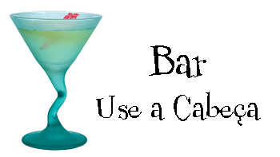

Bem-vindo ao Bar Use a Cabe�a
O Bar Use a Cabe�a �, sem d�vida, o maior lan�ador de tend�ncias de Webl�ndia. Venha experimentar a ecl�tica oferta de elixires, ch�s e caf�s ou fique um pouco mais e aproveite o card�pio multicultural que combina uma harmonia de sabores, texturas e cores
com os melhores ingredientes frescos e saud�veis.
Durante sua perman�ncia no bar, voc� apreciar� uma suave mistura de sons ambientes e m�sticos, que preenchem o bar e adicionam uma dimens�o extra � experi�ncia da refei��o aqui. A decora��o envolve voc� em sentimentos relaxantes de suspiros de eras passadas.
E, n�o se esque�a, o bar oferece acesso wireless gr�tis � Internet, logo traga seu laptop.
Nossa garantia: no bar, temos o compromisso de oferecer a voc�, nosso convidado, uma experi�ncia excepcional em todas as suas visitas. Esteja aqui para verificar seus e-mails enquanto toma seu elixir ou para um jantar diferente, voc� descobrir� que nosso
pessoal presta aten��o a todos os detalhes. Se n�o estiver totalmente satisfeito, tome um Elixir da Felicidade por nossa conta.
Mas isso n�o � tudo; � noite, junte-se a n�s em nosso sal�o dos fundos para curtir nosso DJ tocando uma grande sele��o de trance e de drum&bass na pista de dan�a espa�osa e com temas polin�sios. Ou d� apenas uma passada em uma de nossas confort�veis cabines
brancas de vinil no bar da danceteria. Nossos elixires vir�o do sal�o principal at� voc�, na pista de dan�a. Quando cansar da balada, volte para a �rea principal do bar para relaxar. E, esteja voc� onde estiver em nosso bar, sempre estar�
conectado a nosso acesso wireless � Internet.
Agora que voc� j� experimentou o bar virtualmente, � hora de cair na real. Voc� nos encontrar� bem no centro da cidade de Webl�ndia. Temos instrucoes detalhadas para
voce chegar aqui em tempo recorde. N�o � necess�rio fazer reserva, junte-se a n�s a qualquer hora.
Elixires Especiais da Semana

Brisa de Lim�o
O drink saud�vel perfeito, este elixir combina ervas, minerais e vitaminas com um toque de lim�o em uma maravilha c�trica e suave, que manter� seu sistema imunol�gico perfeito dia e noite.

Ch� de Resfriamento
N�o � nosso ch� tradicional, mas esse elixir mistura mate com temperos chai e junta uma pitada de chocolate extra para um sabor de cafe�na no gelo.

Bebida Negra do C�rebro
Quer turbinar seu c�rebro? Experimente nosso elixir Bebida Negra do C�rebro, feita com ch� de oolong negro e apenas um toque de expresso. Seu c�rebro agradecer� a turbinada.
Junte-se a n�s todas as noites para experimentar esses e outros maravilhosos elixires.
O que est� tocando no Bar
Com freq��ncia nos perguntam que m�sicas tocamos no bar, e n�o se surpreenda, � coisa muito boa. Colocamos uma lista no site que � atualizada semanalmente. Aproveite.
- Buddha Bar, Claude Challe
- When It Falls, Zero 7
- 7, L.T.J. Bukem
- Le Roi Est Mort, Vive Le Roi!, Engima
- Music for Airports, Brian Eno